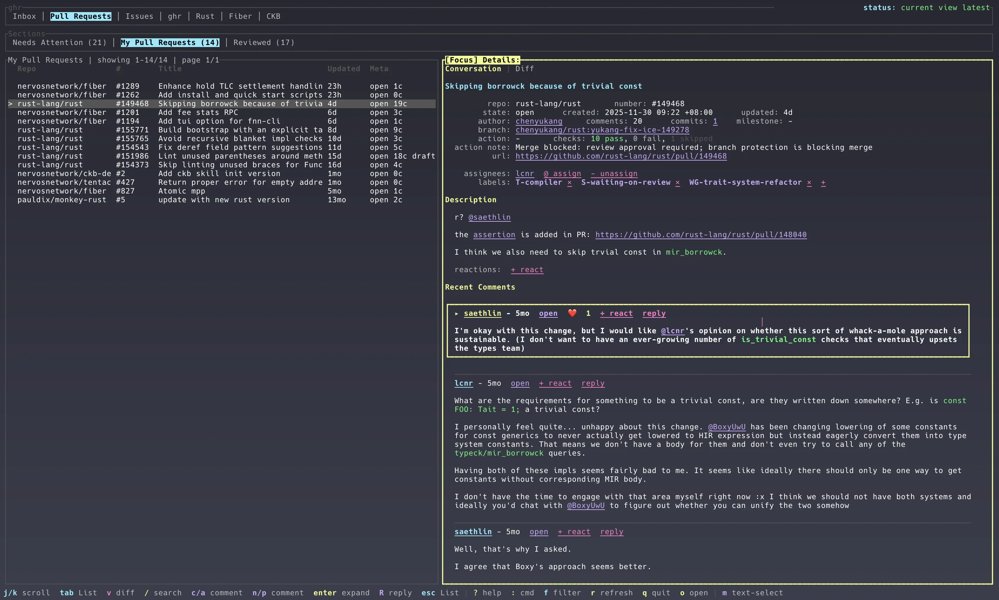
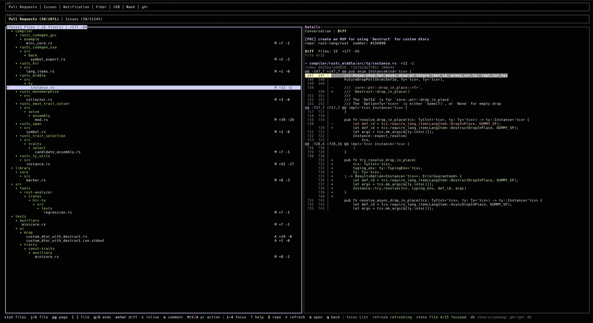

Cache first
Instant startup, live refresh
ghr shows the local SQLite snapshot immediately, refreshes the active view first, then quietly keeps other PR and issue sections warm through the GitHub CLI.
A terminal workspace for GitHub
Pull requests, issues, notifications, conversations, checks, diffs, and review actions in one snapshot-first terminal workspace.
$ brew install chenyukang/tap/ghr-cli
$ curl -fsSL
https://raw.githubusercontent.com/chenyukang/ghr/main/install.sh
| sh
PS> irm
https://raw.githubusercontent.com/chenyukang/ghr/main/install.ps1
| iex
$ cargo install ghr-cli
Then run ghr. Press : inside ghr to
fuzzy-search commands. Release downloads show progress and are
verified before install.

Cache first
ghr shows the local SQLite snapshot immediately, refreshes the active view first, then quietly keeps other PR and issue sections warm through the GitHub CLI.
Triage
Configurable sections, repo tabs, filters, result paging, ignored items, recent item jumps, read/done/mute notification commands, lazy linked PR/issue details, and clickable Markdown image attachments keep the list signal clean. Auto and named color themes let the terminal match your workspace.
Review
Open PR diffs, move by changed file, mark ranges, post inline review comments, and submit reviews from the focused pane.
Workflow
Comment, reply, edit, label, assign, merge, close, update branches, rerun checks, request reviewers, and checkout local PR branches.
Diff review
The diff view keeps changed files and rendered hunks side by side. Inline comments are shown in context, and pending review state stays local until you submit it.

Keyboard surface
Press ? inside ghr for the live reference, or use : to fuzzy-search and run commands from the TUI. Recently run commands appear first.